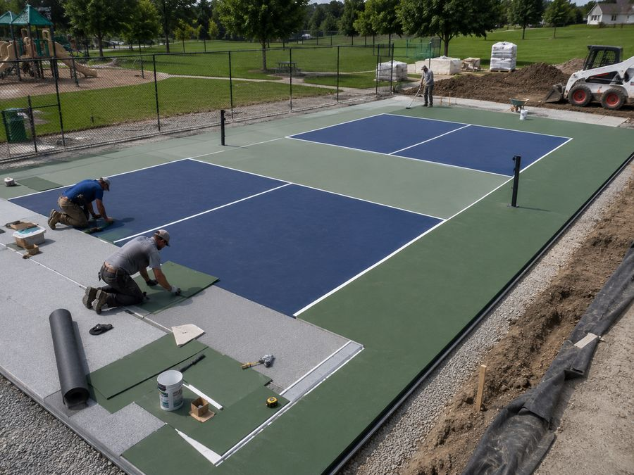
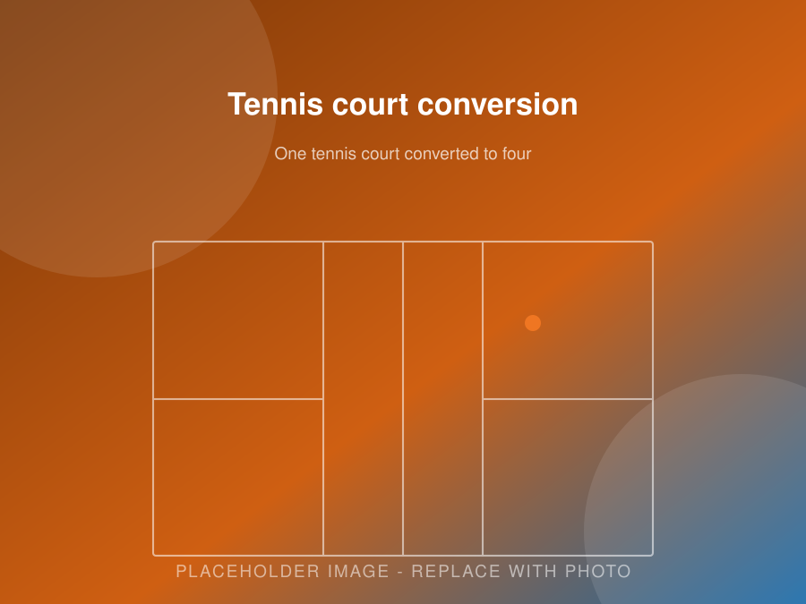

Resurfacing & Repair
Pickleball Court Resurfacing
Crack repair, low spot filling, fresh acrylic colour coats and new regulation lines. A worn court restored for a fraction of the cost of building new.
- Crack repair and surface patching
- Fresh colour coats and new striping
- Tennis court to pickleball conversions
- Free on-site court assessment
Book Consultation Call (705) 242-8236
Free estimates · Locally focused service · Clear, written quotes
Resurfacing & Repair
Bring a Worn Court Back to Life
Every court needs resurfacing eventually. Sun, moisture and play wear the coating down, and small cracks turn into real problems when they are left alone through a few Ontario winters.
Resurfacing restores the playing surface without the cost of a rebuild. You get grip back, a consistent bounce, sharp lines and fresh colour, and you protect the slab underneath for another decade.
We resurface residential courts, club courts, school courts and municipal courts across Peterborough, Lindsay, Cobourg, Port Hope, Campbellford and the surrounding townships.
Signs to Watch For
When a Court Is Telling You It Needs Work
-
Cracks
Hairline cracks are normal and easy to fix. Left open, water gets in, freezes, and widens them every winter. Cracks are the single most urgent reason to book work before the cold arrives.
-
Faded colour
UV breaks down pigment over time. Fading is cosmetic on its own, but it usually means the coating is thinning and losing texture at the same time.
-
Slick surface
When the sand texture in the coating wears smooth, footing gets unreliable and the ball skids. This is a safety issue, not just a playing annoyance.
-
Worn lines
Faint or chipped lines cause arguments and bad calls. They also signal that the coating around them has thinned.
-
Peeling or bubbling
This points to moisture under the surface, often from a coating applied too early or from drainage failing. It needs diagnosing before recoating.
-
Slow-draining puddles
Water that sits for more than an hour after rain means low spots or a slope problem. Standing water shortens coating life considerably.
The Work
Our Resurfacing Process
1. Inspection and assessment
We walk the court and check crack patterns, surface texture, drainage behaviour and the condition of the net posts and fencing. The key question is whether the base is still sound. If it is, resurfacing is good value. If it is not, we tell you that instead of selling you a coat of paint over a failing slab.
2. Cleaning and preparation
The surface is cleaned thoroughly. Loose or delaminated coating is removed. Anything growing on the court comes off, because coating will not bond over algae or moss.
3. Crack repair
Cracks are routed out where needed, cleaned, and filled with a repair compound made for sport surfaces. Structural cracks may need a patch binder membrane over top so the crack does not reflect straight back through the new coating.
4. Low spot filling
We flood the court, mark where water sits, and fill those areas with a patch compound feathered out so the repair is invisible once coated. This is what stops puddles returning.
5. Resurfacer coat
An acrylic resurfacer goes down first. It fills minor texture, evens out the surface and gives the colour coats something consistent to bond to.
6. Colour coats
Two or more colour coats are applied, built up in layers. The sand in the coating is what gives grip and controls how fast the court plays. We can match your existing colours or change them.
7. Line striping
Lines are measured, masked and painted in durable line paint. If you are converting from tennis, this is where the new pickleball layout goes in.
8. Final check
We inspect the finished surface, confirm the lines are accurate, check the net posts and net height, and walk it with you before we call the job done.

Conversions
Tennis Court to Pickleball Conversion
There are a lot of underused tennis courts around Peterborough County, at private homes, clubs, schools and condo properties. Most of them can become pickleball courts.
One standard tennis court has room for up to four pickleball courts. Because the slab, drainage and fencing are already in place, conversion costs a fraction of building new.
What a conversion involves
- Assessment of the existing slab and drainage
- Crack repair and low spot filling
- Resurfacer and fresh colour coats
- New pickleball line layout, with or without tennis lines retained
- Net post sleeves cored and set for the new court positions
- Optional dividing netting between courts
Traction & Play
Improving Traction and How the Court Plays
Resurfacing is a chance to change how your court plays, not just how it looks.
The texture comes from silica sand mixed into the acrylic. More sand gives a slower, grippier surface. Less sand gives a faster court. Most recreational players prefer a medium texture that gives sure footing without being punishing on the feet.
Options worth discussing
- Texture adjustment. If your court plays too fast or too slick, we can change the sand loading in the colour coats.
- Cushioned upgrade. Rubber-filled layers can be added during resurfacing to soften the surface for older players.
- Cooler colours. Lighter surrounds noticeably reduce surface temperature on hot summer afternoons.
- Extra game lines. Add basketball, volleyball or a second court layout while the surface is fresh.
Schedule
A Simple Maintenance Schedule Between Resurfacings
Looking after a court between resurfacings adds years to the coating. None of it is complicated.
| How often | What to do |
|---|---|
| Weekly in season | Blow or sweep off leaves and debris. Check for anything growing at the edges. |
| Monthly | Walk the surface and look for new hairline cracks. Check net tension and post stability. |
| Spring and fall | Low pressure wash. Trim back branches shading the court. Clear drains and swales. |
| Before winter | Fill and seal any cracks. Water in an open crack over a Peterborough winter is what causes real damage. |
| Every 8 to 10 years | Full resurfacing. Sooner for club and public courts. |
Full details are on our court maintenance page.
Free Assessment
Is Your Court Showing Wear?
Cracks, fading or a slick surface all get worse over a winter. Book a free assessment and we will tell you honestly what it needs.
Questions
Frequently Asked Questions
How often should a pickleball court be resurfaced?
Most courts need resurfacing every eight to ten years. Heavily used public and club courts often need it closer to every five to eight years. Sun exposure, drainage and how well the court was built originally all change the number.
How do I know my court needs resurfacing?
The usual signs are faded colour, a surface that feels slick underfoot, lines that have worn thin, small cracks spreading, or puddles that take a long time to clear after rain.
If players are commenting that the ball skids or the footing feels off, the texture in the coating has worn away and it is time.
Can you resurface a court that already has cracks?
Usually yes. We rout and fill cracks, patch low spots and repair the surface before coating. What matters is whether the cracking is cosmetic or structural.
If the slab has failed underneath, coating over it just hides the problem for a season. We tell you honestly which situation you are in.
How long does resurfacing take?
Most courts take about a week, sometimes a bit more if there are significant repairs. Each coat needs to dry before the next goes on, and the coatings need reasonable temperatures, so weather affects the schedule.
Will resurfacing fix standing water?
It can fix minor low spots. We fill and feather them so water sheds properly. If the whole pad was poured at the wrong slope, resurfacing will not fix that. That needs regrading or a new pad, and we will say so rather than take the job.
Can I change the colour?
Yes. Resurfacing is the ideal time to change your colour scheme, add a second set of game lines, or convert a tennis court layout to pickleball lines.
What does it cost compared to a new court?
Resurfacing is a fraction of new construction because the expensive part, the excavation and the slab, is already there. The exact number depends on court size and how much repair work the surface needs first.
Can you convert a tennis court to pickleball courts?
Yes. A standard tennis court usually fits up to four pickleball courts. We repair, resurface and stripe the new layout. It is one of the best value projects available to clubs, schools and condo boards.
Service Area
Where We Build Pickleball Courts
We are based in Peterborough and most of our work is within about an hour of the city. If your property is not on the list below, call anyway. We travel for the right project.
- Peterborough
- Lakefield
- Bridgenorth
- Ennismore
- Selwyn
- Douro-Dummer
- Norwood
- Havelock
- Millbrook
- Keene
- Warsaw
- Buckhorn
- Cavan Monaghan
- Otonabee-South Monaghan
- Bailieboro
- Curve Lake
- Lindsay
- Kawartha Lakes
- Bobcaygeon
- Omemee
- Cobourg
- Port Hope
- Campbellford
- Hastings
- Apsley
- Young's Point
Peterborough & Selwyn Township
Peterborough, Lakefield, Bridgenorth, Ennismore, Young’s Point and Curve Lake. These are our closest jobs and usually our fastest scheduling. Lots north of the city often have room for a full 30 by 60 foot court with space to spare.
East & North of the City
Douro-Dummer, Warsaw, Norwood, Havelock, Apsley and Buckhorn. Rural acreage and waterfront properties here suit a court well, though soil and drainage conditions change a lot from lot to lot.
South & West
Millbrook, Cavan Monaghan, Keene, Bailieboro, Otonabee-South Monaghan, Omemee, Lindsay, Bobcaygeon and the wider City of Kawartha Lakes.
Northumberland & Beyond
Cobourg, Port Hope, Campbellford and Hastings. We take on work in these areas regularly, especially commercial builds and court resurfacing.
Free Estimate
Get a Free Resurfacing Assessment
Tell us about your project. We’ll get back to you with next steps and a time for a site visit.
- No cost, no pressure site visit
- Clear written quote with the work itemized
- Straight answers about what your site actually needs
- Serving Peterborough and the surrounding townships